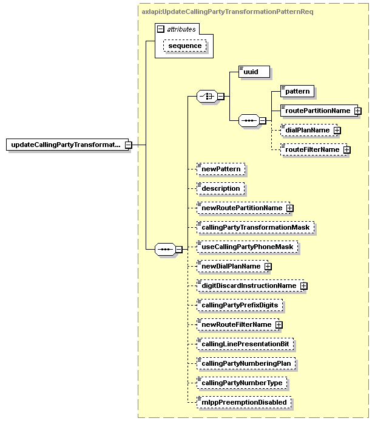

| diagram |  | ||||||||||||
| namespace | http://www.cisco.com/AXL/API/10.5 | ||||||||||||
| type | axlapi:UpdateCallingPartyTransformationPatternReq | ||||||||||||
| properties |
|
||||||||||||
| children | uuid pattern routePartitionName dialPlanName routeFilterName newPattern description newRoutePartitionName callingPartyTransformationMask useCallingPartyPhoneMask newDialPlanName digitDiscardInstructionName callingPartyPrefixDigits newRouteFilterName callingLinePresentationBit callingPartyNumberingPlan callingPartyNumberType mlppPreemptionDisabled | ||||||||||||
| attributes |
|
||||||||||||
| source | <xsd:element name="updateCallingPartyTransformationPattern" type="axlapi:UpdateCallingPartyTransformationPatternReq"/> |